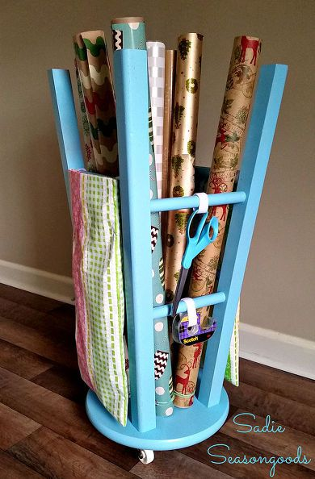
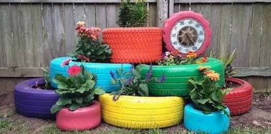
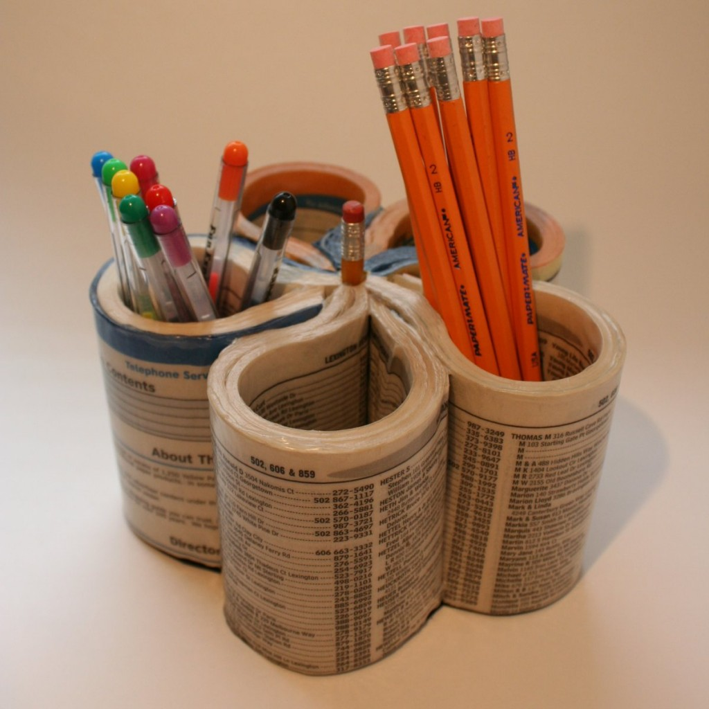
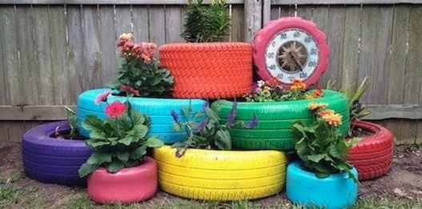
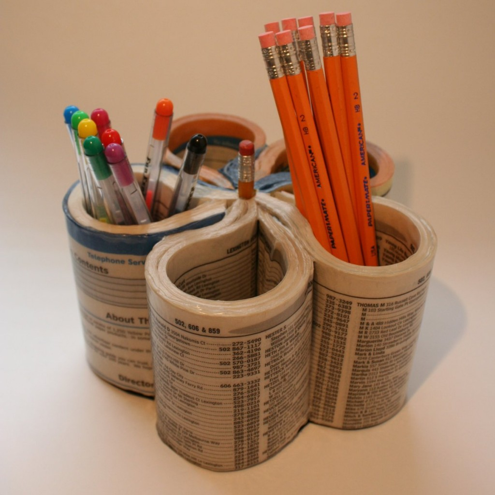

SAVE EARTH SAVE LIFE
SAVE EARTH SAVE LIFE
SAVE EARTH SAVE LIFE

Reuse is the action or practice of using something again, whether for its original purpose (conventional reuse) or to fulfil a different function (creative reuse or repurposing).
It should be distinguished from recycling, which is the breaking down of used items to make raw materials for the manufacture of new products.
Reuse – by taking, but not reprocessing, previously used items – helps save time, money, energy and resources.
In broader economic terms, it can make quality products available to people and organizations with limited means, while generating jobs and business activity that contribute to the economy.
reuse, is that you should reuse items as much as possible before replacing them.
For example, it generally makes more environmental sense to update your computer rather than get rid of it and buy a new one. However, if you do replace your computer, you should ensure that it, or its components, are reused.
Many charitable organizations welcome donations of second-hand computers.
Reuse has certain potential advantages:
- Energy and raw materials savings as replacing many single use products with one reusable one reduces the number that need to be manufactured.
- Reduced disposal needs and costs.
- Refurbishment can bring sophisticated, sustainable, well paid jobs to underdeveloped economies.
- Cost savings for business and consumers as a reusable product is often cheaper than the many single use products it replaces.
- Some older items were better handcrafted and appreciate in value.
Disadvantages are also apparent:
- Reuse often requires cleaning or transport, which have environmental costs.
- Some items, such as freon appliances, infant auto seats, older tube TVs and secondhand automobiles could be hazardous or less energy efficient as they continue to be used.
- Reusable products need to be more durable than single-use products, and hence require more material per item. This is particularly significant if only a small proportion of the reusable products are in fact reused.
- Sorting and preparing items for reuse takes time, which is inconvenient for consumers and costs money for businesses.
- Special skills are required to tweak the functional throughput of items when devoting them to new uses outside of their original purpose.
- Knowing the standards that legacy products conform to is required for knowing what adapters to buy for newer products to be compatible with them, even though the cost of adapters for such applications is a minor disadvantage.
- Being a rather minor disadvantage, metal that is repurposed later on can sometimes contain rust, seeing as it sometimes ages before reuse.

 


